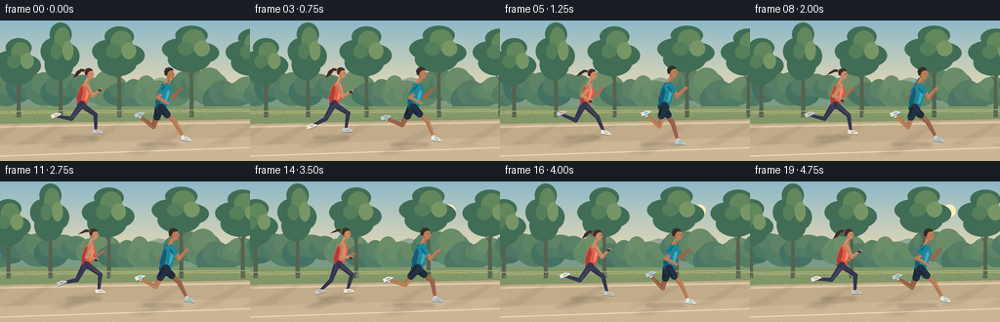
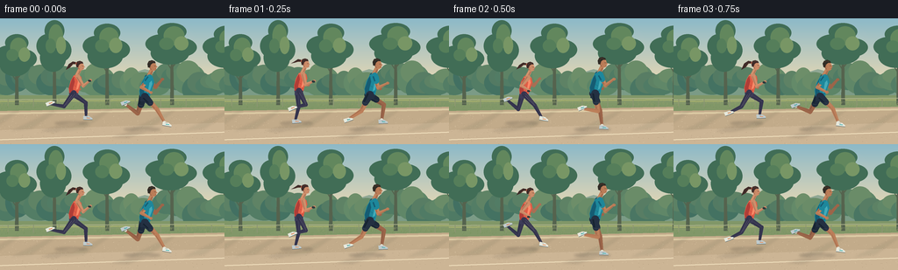

CODING AGENTS AS PIXEL WORLD MODELS
traex/GPT-6.1-Sol · instance_preservation_0033
点击播放 · 原生 RGB 像素
逐轮保存的候选
回放视频、检查图与代码变化。
每份候选均可单独播放。实际图片检查记录在下方工具轨迹中。
候选 01播放与检查图
点击播放 · 原生 RGB 像素


展开代码变化
--- 上一保存版本
+++ 本次保存版本
@@ -0,0 +1,227 @@
+from pathlib import Path
+import math
+import numpy as np
+from PIL import Image, ImageDraw, ImageFilter
+import artifact_io
+
+ROOT=Path(__file__).resolve().parent
+W,H,S=256,144,4
+rng=np.random.default_rng(1047)
+
+def mix(a,b,t): return tuple(int(a[i]*(1-t)+b[i]*t) for i in range(3))
+def pnt(p): return tuple(int(round(c*S)) for c in p)
+def poly(d,pts,c): d.polygon([pnt(p) for p in pts],fill=c)
+def line(d,pts,c,width=1): d.line([pnt(p) for p in pts],fill=c,width=max(1,int(width*S)),joint='curve')
+def ellipse(d,box,c): d.ellipse(tuple(int(round(v*S)) for v in box), fill=c)
+def curve(points,n=25):
+ # cubic Bezier
+ a,b,c,e=[np.array(x,float) for x in points]
+ return [tuple((1-t)**3*a+3*(1-t)**2*t*b+3*(1-t)*t*t*c+t**3*e) for t in np.linspace(0,1,n)]
+def capsule(d,a,b,r1,r2,c,shade=None,highlight=None):
+ ax,ay=a; bx,by=b; dx,dy=bx-ax,by-ay; length=max(.01,math.hypot(dx,dy)); nx,ny=-dy/length,dx/length
+ poly(d,[(ax+nx*r1,ay+ny*r1),(bx+nx*r2,by+ny*r2),(bx-nx*r2,by-ny*r2),(ax-nx*r1,ay-ny*r1)],c)
+ ellipse(d,(ax-r1,ay-r1,ax+r1,ay+r1),c); ellipse(d,(bx-r2,by-r2,bx+r2,by+r2),c)
+ if shade:
+ line(d,[(ax+nx*r1*.53,ay+ny*r1*.53),(bx+nx*r2*.52,by+ny*r2*.52)],shade,max(.55,r2*.55))
+ if highlight:
+ line(d,[(ax-nx*r1*.48,ay-ny*r1*.48),(bx-nx*r2*.4,by-ny*r2*.4)],highlight,max(.45,r2*.3))
+
+# Consistent, seeded landscape objects; translated only by the tracking camera.
+clusters=[]
+for j in range(40):
+ x=j*13-45
+ clusters.append((x,rng.uniform(59,76),rng.uniform(13,23),rng.uniform(13,24),rng.random()))
+trees=[]
+for j,x in enumerate([-28,19,62,122,196,259,307,362]):
+ trees.append((x,float(rng.uniform(30,49)),float(rng.uniform(16,25)),float(rng.uniform(31,43))))
+grass=[(float(rng.uniform(-60,340)),float(rng.uniform(94,104)),float(rng.uniform(.8,2.7))) for _ in range(450)]
+pathgrains=[(float(rng.uniform(-80,360)),float(rng.uniform(110,144)),float(rng.uniform(.13,.6))) for _ in range(700)]
+
+def background(t):
+ arr=np.zeros((H*S,W*S,3),np.uint8)
+ for y in range(H*S):
+ arr[y,:]=mix((140,185,200),(248,222,176),min(1,y/(88*S)))
+ im=Image.fromarray(arr); d=ImageDraw.Draw(im)
+ # softly glowing sun, distant hills, and a muted waterline
+ glow=Image.new('RGBA',im.size); gd=ImageDraw.Draw(glow)
+ for r in range(25,1,-1):
+ ellipse(gd,(204-r,30-r,204+r,30+r),(255,243,191,2 if r>12 else 5))
+ glow=glow.filter(ImageFilter.GaussianBlur(4*S)); im=Image.alpha_composite(im.convert('RGBA'),glow).convert('RGB');d=ImageDraw.Draw(im)
+ ellipse(d,(197.5,23.5,210.5,36.5),(255,240,185))
+ off=t*5.8
+ poly(d,[(-5,79),(18-off*.12,65),(47-off*.12,70),(83-off*.12,60),(121-off*.12,72),(165-off*.12,58),(204-off*.12,68),(258,62),(270,92),(-5,92)],(145,168,149))
+ poly(d,[(-5,86),(24,76),(54,80),(91,72),(139,79),(180,70),(226,78),(270,74),(270,100),(-5,100)],(123,155,134))
+ for x,y,rx,ry,v in clusters:
+ x-=off*.42
+ col=mix((66,112,98),(105,142,106),v)
+ ellipse(d,(x-rx,y-ry*.5,x+rx,y+ry),col)
+ ellipse(d,(x-rx*.7,y-ry*.65,x+rx*.65,y+ry*.45),mix(col,(162,167,107),.16))
+ poly(d,[(0,88),(256,88),(256,106),(0,108)],(129,151,104))
+ line(d,[(0,95),(256,93)],(165,174,113),1.8)
+ # tree silhouettes, dappled illuminated crowns
+ for x,y,rx,hh in trees:
+ x-=off*.66
+ poly(d,[(x-2,99),(x-1.4,y+8),(x+1.2,y+6),(x+2.3,99)],(85,99,78))
+ line(d,[(x,y+27),(x-8,y+14)],(85,99,78),1.2)
+ line(d,[(x,y+24),(x+9,y+13)],(85,99,78),1.3)
+ for dx,dy,rr in [(-.5,-.1,.78),(.45,.02,.75),(0,-.52,.7),(-.1,.22,.93)]:
+ ellipse(d,(x+dx*rx-rx*rr,y+dy*hh-hh*.42*rr,x+dx*rx+rx*rr,y+dy*hh+hh*.42*rr),(65,109,86))
+ ellipse(d,(x-rx*.4,y-hh*.7,x+rx*.61,y-hh*.05),(98,135,93))
+ ellipse(d,(x+rx*.12,y-hh*.36,x+rx*.8,y+hh*.12),(120,150,101))
+ ellipse(d,(x-rx*.62,y-hh*.31,x+rx*.09,y+hh*.1),(85,126,90))
+ # a low park rail gives perspective without additional human figures
+ line(d,[(-10,93),(268,91)],(182,185,145),1.1)
+ line(d,[(-10,97),(268,95)],(149,157,123),.7)
+ for x in np.arange(-20,310,29):
+ xx=x-off*.75
+ line(d,[(xx,92),(xx,101)],(140,150,114),1)
+ for x,y,h in grass:
+ x-=off*.9
+ line(d,[(x,y),(x+.45,y-h)],(153,162,103) if y<100 else (115,143,86),.27)
+ # broad ochre recreational path with subtle texture
+ poly(d,[(-5,106),(261,101),(261,144),(-5,144)],(194,171,138))
+ poly(d,[(-5,108),(261,103),(261,105),(-5,110)],(220,202,164))
+ poly(d,[(-5,128),(261,119),(261,144),(-5,144)],(204,181,149))
+ # drifting leaf shadows on the ground
+ shadows=Image.new('RGBA',im.size); sd=ImageDraw.Draw(shadows)
+ for x,y,rx,hh in trees:
+ x-=off*.66
+ poly(sd,[(x-4,107),(x+4,105),(x-26,126),(x-50,129)],(68,86,65,24))
+ for x,y,r in pathgrains:
+ xx=(x-off*1.12+80)%440-80
+ ellipse(d,(xx,y,xx+r,y+r*.45),(183,161,130) if r>.4 else (223,202,169))
+ im=Image.alpha_composite(im.convert('RGBA'),shadows.filter(ImageFilter.GaussianBlur(1.3*S))).convert('RGB')
+ d=ImageDraw.Draw(im)
+ # edge marking, far from the runners' silhouettes
+ line(d,[(-5,139),(261,130)],(238,221,187),1.35)
+ return im
+
+# Smooth keyframed running gait, expressed as thigh and knee angles.
+keys=np.array([
+ [0,46,16], [.13,19,12], [.28,-23,22], [.40,-35,69],
+ [.55,-15,120], [.69,29,104], [.82,56,64], [1,46,16]
+],float)
+def gait(ph):
+ ph%=1
+ i=min(len(keys)-2,np.searchsorted(keys[:,0],ph,side='right')-1)
+ f=(ph-keys[i,0])/(keys[i+1,0]-keys[i,0]); f=f*f*(3-2*f)
+ return np.radians(keys[i,1:]*(1-f)+keys[i+1,1:]*f)
+
+def runner(im,x,ground,scale,phase,female,t):
+ d=ImageDraw.Draw(im)
+ skin=(204,139,104) if female else (187,125,88)
+ dark=mix(skin,(93,53,43),.32); bright=mix(skin,(255,208,157),.35)
+ shirt=(223,93,70) if female else (29,135,155)
+ shirtshade=(175,61,55) if female else (21,92,115)
+ shirtlight=(249,139,105) if female else (68,171,184)
+ bottoms=(60,60,88) if female else (35,48,66)
+ def point(a,b): return (x+a*scale,hipy+b*scale)
+ # hip movement and flight moments; rig planted at the path elevation
+ hipy=ground-34.4*scale-1.25*scale*(1-math.cos(4*math.pi*phase))
+ joints=[]
+ for ph in [phase+.5,phase]:
+ a,k=gait(ph)
+ knee=np.array([math.sin(a)*19.3,math.cos(a)*19.3])
+ ankle=knee+np.array([math.sin(a-k)*18.6,math.cos(a-k)*18.6])
+ joints.append((knee,ankle,a-k))
+ lowest=max(j[1][1] for j in joints)
+ if hipy+lowest*scale>ground-1.2*scale: hipy=ground-1.2*scale-lowest*scale
+ # long, soft tracking shadows beneath each distinct runner
+ sh=Image.new('RGBA',im.size); sd=ImageDraw.Draw(sh)
+ ellipse(sd,(x-22*scale,ground-1,x+18*scale,ground+3),(70,64,59,57))
+ poly(sd,[(x-3,ground),(x+10,ground+1),(x-19,ground+11),(x-37,ground+10)],(76,71,62,32))
+ im.paste(Image.alpha_composite(im.convert('RGBA'),sh.filter(ImageFilter.GaussianBlur(1.3*S))).convert('RGB'))
+ d=ImageDraw.Draw(im)
+ def shoe(ankle,angle,far):
+ ax,ay=ankle
+ toe_angle=max(-.43,min(.62,angle*.35))
+ ux,uy=math.cos(toe_angle),math.sin(toe_angle)
+ nx,ny=-uy,ux
+ pts=[(ax-3.2*ux-2.4*nx,ay-3.2*uy-2.4*ny),(ax+3.1*ux-2.1*nx,ay+3.1*uy-2.1*ny),(ax+7*ux+.25*nx,ay+7*uy+.25*ny),(ax+7*ux+2*nx,ay+7*uy+2*ny),(ax-3.2*ux+2*nx,ay-3.2*uy+2*ny)]
+ poly(d,pts,(192,203,205) if far else (231,233,221))
+ line(d,[pts[-1],pts[-2]],(98,111,112),.9*scale)
+ line(d,[(ax+.5*ux,ay+.5*uy),(ax+4.2*ux,ay+4.2*uy)],(233,137,83) if female else (67,181,180),1.15*scale)
+ line(d,[(ax,ay-1.4*scale),(ax+2*scale,ay-1*scale)],(110,116,116),.5*scale)
+ def leg(i,far):
+ knee,ankle,ang=joints[i]
+ hip=point(-1 if far else 1,0); kn=point(*knee); an=point(*ankle)
+ col=mix(bottoms,(32,33,52),.23) if female else (dark if far else skin)
+ capsule(d,hip,kn,3.4*scale,2.2*scale,col,mix(col,(28,27,42),.18),None if far else mix(col,(224,200,170),.18))
+ capsule(d,kn,an,2.25*scale,1.25*scale,col,mix(col,(28,27,42),.22),None if far else mix(col,(240,199,149),.18))
+ if not female:
+ # Shorts cover the upper thigh; a defined fabric hem stays attached to the leg.
+ end=point(*(knee*.48))
+ capsule(d,hip,end,4.1*scale,3.35*scale,(29,42,58) if far else bottoms,(22,35,48))
+ line(d,[(end[0]-2.4*scale,end[1]+.1*scale),(end[0]+1.8*scale,end[1]+1.1*scale)],(69,83,92),.6*scale)
+ capsule(d,point(*(ankle*.0+knee*.12+ankle*.88)),an,1.55*scale,1.45*scale,(226,224,209))
+ else:
+ line(d,[point(*(knee*.15)),kn],(94,90,115) if not far else (68,67,91),.7*scale)
+ shoe(an,ang,far)
+ shoulder=point(5.1,-21)
+ def arm(far):
+ ap=phase+(.5 if far else 0)
+ theta=.7*math.cos(2*math.pi*ap+math.pi)
+ shoulder_local=np.array([4.0 if far else 6,-20.3])
+ elbow=shoulder_local+np.array([13.2*math.sin(theta),13.2*math.cos(theta)])
+ fore_angle=theta+1.75
+ wrist=elbow+np.array([11.3*math.sin(fore_angle),11.3*math.cos(fore_angle)])
+ a=point(*shoulder_local);b=point(*elbow);c=point(*wrist)
+ col=dark if far else skin
+ capsule(d,a,b,2.7*scale,1.75*scale,col,dark,None if far else bright)
+ capsule(d,b,c,1.9*scale,1.1*scale,col,dark,None if far else bright)
+ ellipse(d,(c[0]-1.6*scale,c[1]-1.4*scale,c[0]+2*scale,c[1]+1.5*scale),col)
+ line(d,[(c[0]+.9*scale,c[1]-.5*scale),(c[0]+1.3*scale,c[1]+.5*scale)],dark,.4*scale)
+ if not female:
+ end=point(*(shoulder_local+(elbow-shoulder_local)*.43))
+ capsule(d,a,end,3.5*scale,3*scale,shirtshade if far else shirt,shirtshade)
+ elif not far:
+ # sports watch on near wrist
+ capsule(d,(c[0]-1.6*scale,c[1]+.7*scale),(c[0]-.2*scale,c[1]+1*scale),1.1*scale,1.1*scale,(41,55,59))
+ leg(0,True);arm(True)
+ # torso: an organic tapered shape, leaning into the run
+ torso=[point(-4,1),point(-5,-6),point(-2.7,-15),point(1,-21.5),point(5,-23),point(10,-20),point(11,-15),point(8,-6),point(6,1)]
+ poly(d,torso,shirt)
+ poly(d,[point(-4,0),point(-4.4,-7),point(-1,-17),point(1,-20),point(2,-14),point(0,-6),point(1,1)],shirtshade)
+ poly(d,[point(5,-21),point(8,-19),point(9,-14),point(6,-5),point(4,-4),point(6,-14)],shirtlight)
+ line(d,[point(-3,-3),point(2,-2),point(6,-3)],shirtshade,.75*scale)
+ line(d,[point(1,-10),point(4,-8)],mix(shirtshade,shirt,.5),.6*scale)
+ if female:
+ line(d,[point(1,-21),point(5,-20),point(7,-22)],(255,179,139),.7*scale)
+ poly(d,[point(-4,0),point(6,0),point(5,5),point(-4,5)],bottoms)
+ line(d,[point(-3,.6),point(5,.6)],(103,107,122),.7*scale)
+ leg(1,False)
+ # neck and head, with identifiable profiles facing the direction of travel
+ capsule(d,point(5,-22),point(8,-28),2.2*scale,2.1*scale,skin,dark,bright)
+ hx,hy=point(9,-32.5)
+ head=[(hx-4.6*scale,hy-4.7*scale),(hx-1.5*scale,hy-6.4*scale),(hx+2.3*scale,hy-5.3*scale),(hx+4*scale,hy-2.5*scale),(hx+4.2*scale,hy-.8*scale),(hx+5.6*scale,hy+.5*scale),(hx+4.2*scale,hy+1.2*scale),(hx+4.1*scale,hy+3.2*scale),(hx+2.3*scale,hy+4.6*scale),(hx-.5*scale,hy+4.4*scale),(hx-3.4*scale,hy+1.3*scale)]
+ poly(d,head,skin)
+ poly(d,[(hx-4.3*scale,hy-3*scale),(hx-1.4*scale,hy-2.3*scale),(hx-1*scale,hy+3.8*scale),(hx-3.4*scale,hy+1.1*scale)],dark)
+ line(d,[(hx+2.6*scale,hy-3.3*scale),(hx+3.5*scale,hy-1.8*scale)],bright,.65*scale)
+ ellipse(d,(hx-1.9*scale,hy-.6*scale,hx+.5*scale,hy+2.2*scale),skin)
+ line(d,[(hx-.8*scale,hy+.1*scale),(hx-.3*scale,hy+1.4*scale)],dark,.4*scale)
+ line(d,[(hx+2.1*scale,hy-.7*scale),(hx+3.5*scale,hy-.5*scale)],(57,47,40),.55*scale)
+ line(d,[(hx+3.1*scale,hy+2.5*scale),(hx+4.2*scale,hy+2.4*scale)],(126,73,60),.45*scale)
+ hair=(64,43,40) if female else (48,43,37)
+ poly(d,[(hx-4.5*scale,hy+1*scale),(hx-5.3*scale,hy-3*scale),(hx-3.6*scale,hy-6*scale),(hx-.5*scale,hy-7*scale),(hx+2.7*scale,hy-5.7*scale),(hx+3.5*scale,hy-3.8*scale),(hx+.2*scale,hy-3.6*scale),(hx-2*scale,hy-1.7*scale),(hx-2.7*scale,hy+.8*scale)],hair)
+ line(d,[(hx-3.6*scale,hy-4.4*scale),(hx-.5*scale,hy-5.7*scale),(hx+1.5*scale,hy-5*scale)],(98,69,53),.7*scale)
+ if female:
+ tail=[(hx-4.7*scale,hy-3*scale),(hx-9*scale,hy-3*scale),(hx-12.6*scale,hy+math.sin(phase*2*math.pi)*2*scale),(hx-17.5*scale,hy+2*scale+math.sin(phase*2*math.pi)*3*scale),(hx-14*scale,hy-3*scale),(hx-9.1*scale,hy-6*scale),(hx-4.2*scale,hy-5*scale)]
+ poly(d,tail,hair)
+ line(d,[tail[0],tail[1],tail[2]],(98,63,48),.65*scale)
+ line(d,[(hx-5*scale,hy-5*scale),(hx-5.3*scale,hy-2.7*scale)],(221,113,82),1*scale)
+ arm(False)
+
+
+def generate():
+ frames=[]
+ for i in range(20):
+ t=i/4
+ im=background(t)
+ # Far runner and near runner preserve their appearance throughout.
+ runner(im,83+2.0*t+.8*math.sin(t*1.8),119,.94,t*1.26+.38,True,t)
+ runner(im,164+1.9*t+.75*math.sin(t*1.7),126,1.06,t*1.26,False,t)
+ im=im.resize((W,H),Image.Resampling.LANCZOS)
+ frames.append(np.array(im,dtype=np.uint8))
+ artifact_io.save(np.stack(frames),ROOT)
+
+if __name__=='__main__': generate()
可观测工具轨迹
实际执行的命令与返回图片。
命令 1exit 0
/bin/bash -lc 'ls -la && cat prompt.txt && cat GENERATION_RULES.md && cat task_spec.json'
命令 2exit 0
/bin/bash -lc "cat artifact_io.py && python - <<'PY' import importlib.util for m in ['numpy','PIL','scipy']: print(m, bool(importlib.util.find_spec(m))) PY"
命令 3exit 0
/bin/bash -lc "cat > generate.py <<'PY'
from pathlib import Path
import math
import numpy as np
from PIL import Image, ImageDraw, ImageFilter
import artifact_io
ROOT=Path(__file__).resolve().parent
W,H,S=256,144,4
rng=np.random.default_rng(1047)
def mix(a,b,t): return tuple(int(a[i]*(1-t)+b[i]*t) for i in range(3))
def pnt(p): return tuple(int(round(c*S)) for c in p)
def poly(d,pts,c): d.polygon([pnt(p) for p in pts],fill=c)
def line(d,pts,c,width=1): d.line([pnt(p) for p in pts],fill=c,width=max(1,int(width*S)),joint='curve')
def ellipse(d,box,c): d.ellipse(tuple(int(round(v*S)) for v in box), fill=c)
def curve(points,n=25):
# cubic Bezier
a,b,c,e=[np.array(x,float) for x in points]
return [tuple((1-t)**3*a+3*(1-t)**2*t*b+3*(1-t)*t*t*c+t**3*e) for t in np.linspace(0,1,n)]
def capsule(d,a,b,r1,r2,c,shade=None,highlight=None):
ax,ay=a; bx,by=b; dx,dy=bx-ax,by-ay; length=max(.01,math.hypot(dx,dy)); nx,ny=-dy/length,dx/length
poly(d,[(ax+nx*r1,ay+ny*r1),(bx+nx*r2,by+ny*r2),(bx-nx*r2,by-ny*r2),(ax-nx*r1,ay-ny*r1)],c)
ellipse(d,(ax-r1,ay-r1,ax+r1,ay+r1),c); ellipse(d,(bx-r2,by-r2,bx+r2,by+r2),c)
if shade:
line(d,[(ax+nx*r1*.53,ay+ny*r1*.53),(bx+nx*r2*.52,by+ny*r2*.52)],shade,max(.55,r2*.55))
if highlight:
line(d,[(ax-nx*r1*.48,ay-ny*r1*.48),(bx-nx*r2*.4,by-ny*r2*.4)],highlight,max(.45,r2*.3))
# Consistent, seeded landscape objects; translated only by the tracking camera.
clusters=[]
for j in range(40):
x=j*13-45
clusters.append((x,rng.uniform(59,76),rng.uniform(13,23),rng.uniform(13,24),rng.random()))
trees=[]
for j,x in enumerate([-28,19,62,122,196,259,307,362]):
trees.append((x,float(rng.uniform(30,49)),float(rng.uniform(16,25)),float(rng.uniform(31,43))))
grass=[(float(rng.uniform(-60,340)),float(rng.uniform(94,104)),float(rng.uniform(.8,2.7))) for _ in range(450)]
pathgrains=[(float(rng.uniform(-80,360)),float(rng.uniform(110,144)),float(rng.uniform(.13,.6))) for _ in range(700)]
def background(t):
arr=np.zeros((H*S,W*S,3),np.uint8)
for y in range(H*S):
arr[y,:]=mix((140,185,200),(248,222,176),min(1,y/(88*S)))
im=Image.fromarray(arr); d=ImageDraw.Draw(im)
# softly glowing sun, distant hills, and a muted waterline
glow=Image.new('RGBA',im.size); gd=ImageDraw.Draw(glow)
for r in range(25,1,-1):
ellipse(gd,(204-r,30-r,204+r,30+r),(255,243,191,2 if r>12 else 5))
glow=glow.filter(ImageFilter.GaussianBlur(4*S)); im=Image.alpha_composite(im.convert('RGBA'),glow).convert('RGB');d=ImageDraw.Draw(im)
ellipse(d,(197.5,23.5,210.5,36.5),(255,240,185))
off=t*5.8
poly(d,[(-5,79),(18-off*.12,65),(47-off*.12,70),(83-off*.12,60),(121-off*.12,72),(165-off*.12,58),(204-off*.12,68),(258,62),(270,92),(-5,92)],(145,168,149))
poly(d,[(-5,86),(24,76),(54,80),(91,72),(139,79),(180,70),(226,78),(270,74),(270,100),(-5,100)],(123,155,134))
for x,y,rx,ry,v in clusters:
x-=off*.42
col=mix((66,112,98),(105,142,106),v)
ellipse(d,(x-rx,y-ry*.5,x+rx,y+ry),col)
ellipse(d,(x-rx*.7,y-ry*.65,x+rx*.65,y+ry*.45),mix(col,(162,167,107),.16))
poly(d,[(0,88),(256,88),(256,106),(0,108)],(129,151,104))
line(d,[(0,95),(256,93)],(165,174,113),1.8)
# tree silhouettes, dappled illuminated crowns
for x,y,rx,hh in trees:
x-=off*.66
poly(d,[(x-2,99),(x-1.4,y+8),(x+1.2,y+6),(x+2.3,99)],(85,99,78))
line(d,[(x,y+27),(x-8,y+14)],(85,99,78),1.2)
line(d,[(x,y+24),(x+9,y+13)],(85,99,78),1.3)
for dx,dy,rr in [(-.5,-.1,.78),(.45,.02,.75),(0,-.52,.7),(-.1,.22,.93)]:
ellipse(d,(x+dx*rx-rx*rr,y+dy*hh-hh*.42*rr,x+dx*rx+rx*rr,y+dy*hh+hh*.42*rr),(65,109,86))
ellipse(d,(x-rx*.4,y-hh*.7,x+rx*.61,y-hh*.05),(98,135,93))
ellipse(d,(x+rx*.12,y-hh*.36,x+rx*.8,y+hh*.12),(120,150,101))
ellipse(d,(x-rx*.62,y-hh*.31,x+rx*.09,y+hh*.1),(85,126,90))
# a low park rail gives perspective without additional human figures
line(d,[(-10,93),(268,91)],(182,185,145),1.1)
line(d,[(-10,97),(268,95)],(149,157,123),.7)
for x in np.arange(-20,310,29):
xx=x-off*.75
line(d,[(xx,92),(xx,101)],(140,150,114),1)
for x,y,h in grass:
x-=off*.9
line(d,[(x,y),(x+.45,y-h)],(153,162,103) if y<100 else (115,143,86),.27)
# broad ochre recreational path with subtle texture
poly(d,[(-5,106),(261,101),(261,144),(-5,144)],(194,171,138))
poly(d,[(-5,108),(261,103),(261,105),(-5,110)],(220,202,164))
poly(d,[(-5,128),(261,119),(261,144),(-5,144)],(204,181,149))
# drifting leaf shadows on the ground
shadows=Image.new('RGBA',im.size); sd=ImageDraw.Draw(shadows)
for x,y,rx,hh in trees:
x-=off*.66
poly(sd,[(x-4,107),(x+4,105),(x-26,126),(x-50,129)],(68,86,65,24))
for x,y,r in pathgrains:
xx=(x-off*1.12+80)%440-80
ellipse(d,(xx,y,xx+r,y+r*.45),(183,161,130) if r>.4 else (223,202,169))
im=Image.alpha_composite(im.convert('RGBA'),shadows.filter(ImageFilter.GaussianBlur(1.3*S))).convert('RGB')
d=ImageDraw.Draw(im)
# edge marking, far from the runners' silhouettes
line(d,[(-5,139),(261,130)],(238,221,187),1.35)
return im
# Smooth keyframed running gait, expressed as thigh and knee angles.
keys=np.array([
[0,46,16], [.13,19,12], [.28,-23,22], [.40,-35,69],
[.55,-15,120], [.69,29,104], [.82,56,64], [1,46,16]
],float)
def gait(ph):
ph%=1
i=min(len(keys)-2,np.searchsorted(keys[:,0],ph,side='right')-1)
f=(ph-keys[i,0])/(keys[i+1,0]-keys[i,0]); f=f*f*(3-2*f)
return np.radians(keys[i,1:]*(1-f)+keys[i+1,1:]*f)
def runner(im,x,ground,scale,phase,female,t):
d=ImageDraw.Draw(im)
skin=(204,139,104) if female else (187,125,88)
dark=mix(skin,(93,53,43),.32); bright=mix(skin,(255,208,157),.35)
shirt=(223,93,70) if female else (29,135,155)
shirtshade=(175,61,55) if female else (21,92,115)
shirtlight=(249,139,105) if female else (68,171,184)
bottoms=(60,60,88) if female else (35,48,66)
def point(a,b): return (x+a*scale,hipy+b*scale)
# hip movement and flight moments; rig planted at the path elevation
hipy=ground-34.4*scale-1.25*scale*(1-math.cos(4*math.pi*phase))
joints=[]
for ph in [phase+.5,phase]:
a,k=gait(ph)
knee=np.array([math.sin(a)*19.3,math.cos(a)*19.3])
ankle=knee+np.array([math.sin(a-k)*18.6,math.cos(a-k)*18.6])
joints.append((knee,ankle,a-k))
lowest=max(j[1][1] for j in joints)
if hipy+lowest*scale>ground-1.2*scale: hipy=ground-1.2*scale-lowest*scale
# long, soft tracking shadows beneath each distinct runner
sh=Image.new('RGBA',im.size); sd=ImageDraw.Draw(sh)
ellipse(sd,(x-22*scale,ground-1,x+18*scale,ground+3),(70,64,59,57))
poly(sd,[(x-3,ground),(x+10,ground+1),(x-19,ground+11),(x-37,ground+10)],(76,71,62,32))
im.paste(Image.alpha_composite(im.convert('RGBA'),sh.filter(ImageFilter.GaussianBlur(1.3*S))).convert('RGB'))
d=ImageDraw.Draw(im)
def shoe(ankle,angle,far):
ax,ay=ankle
toe_angle=max(-.43,min(.62,angle*.35))
ux,uy=math.cos(toe_angle),math.sin(toe_angle)
nx,ny=-uy,ux
pts=[(ax-3.2*ux-2.4*nx,ay-3.2*uy-2.4*ny),(ax+3.1*ux-2.1*nx,ay+3.1*uy-2.1*ny),(ax+7*ux+.25*nx,ay+7*uy+.25*ny),(ax+7*ux+2*nx,ay+7*uy+2*ny),(ax-3.2*ux+2*nx,ay-3.2*uy+2*ny)]
poly(d,pts,(192,203,205) if far else (231,233,221))
line(d,[pts[-1],pts[-2]],(98,111,112),.9*scale)
line(d,[(ax+.5*ux,ay+.5*uy),(ax+4.2*ux,ay+4.2*uy)],(233,137,83) if female else (67,181,180),1.15*scale)
line(d,[(ax,ay-1.4*scale),(ax+2*scale,ay-1*scale)],(110,116,116),.5*scale)
def leg(i,far):
knee,ankle,ang=joints[i]
hip=point(-1 if far else 1,0); kn=point(*knee); an=point(*ankle)
col=mix(bottoms,(32,33,52),.23) if female else (dark if far else skin)
capsule(d,hip,kn,3.4*scale,2.2*scale,col,mix(col,(28,27,42),.18),None if far else mix(col,(224,200,170),.18))
capsule(d,kn,an,2.25*scale,1.25*scale,col,mix(col,(28,27,42),.22),None if far else mix(col,(240,199,149),.18))
if not female:
# Shorts cover the upper thigh; a defined fabric hem stays attached to the leg.
end=point(*(knee*.48))
capsule(d,hip,end,4.1*scale,3.35*scale,(29,42,58) if far else bottoms,(22,35,48))
line(d,[(end[0]-2.4*scale,end[1]+.1*scale),(end[0]+1.8*scale,end[1]+1.1*scale)],(69,83,92),.6*scale)
capsule(d,point(*(ankle*.0+knee*.12+ankle*.88)),an,1.55*scale,1.45*scale,(226,224,209))
else:
line(d,[point(*(knee*.15)),kn],(94,90,115) if not far else (68,67,91),.7*scale)
shoe(an,ang,far)
shoulder=point(5.1,-21)
def arm(far):
ap=phase+(.5 if far else 0)
theta=.7*math.cos(2*math.pi*ap+math.pi)
shoulder_local=np.array([4.0 if far else 6,-20.3])
elbow=shoulder_local+np.array([13.2*math.sin(theta),13.2*math.cos(theta)])
fore_angle=theta+1.75
wrist=elbow+np.array([11.3*math.sin(fore_angle),11.3*math.cos(fore_angle)])
a=point(*shoulder_local);b=point(*elbow);c=point(*wrist)
col=dark if far else skin
capsule(d,a,b,2.7*scale,1.75*scale,col,dark,None if far else bright)
capsule(d,b,c,1.9*scale,1.1*scale,col,dark,None if far else bright)
ellipse(d,(c[0]-1.6*scale,c[1]-1.4*scale,c[0]+2*scale,c[1]+1.5*scale),col)
line(d,[(c[0]+.9*scale,c[1]-.5*scale),(c[0]+1.3*scale,c[1]+.5*scale)],dark,.4*scale)
if not female:
end=point(*(shoulder_local+(elbow-shoulder_local)*.43))
capsule(d,a,end,3.5*scale,3*scale,shirtshade if far else shirt,shirtshade)
elif not far:
# sports watch on near wrist
capsule(d,(c[0]-1.6*scale,c[1]+.7*scale),(c[0]-.2*scale,c[1]+1*scale),1.1*scale,1.1*scale,(41,55,59))
leg(0,True);arm(True)
# torso: an organic tapered shape, leaning into the run
torso=[point(-4,1),point(-5,-6),point(-2.7,-15),point(1,-21.5),point(5,-23),point(10,-20),point(11,-15),point(8,-6),point(6,1)]
poly(d,torso,shirt)
poly(d,[point(-4,0),point(-4.4,-7),point(-1,-17),point(1,-20),point(2,-14),point(0,-6),point(1,1)],shirtshade)
poly(d,[point(5,-21),point(8,-19),point(9,-14),point(6,-5),point(4,-4),point(6,-14)],shirtlight)
line(d,[point(-3,-3),point(2,-2),point(6,-3)],shirtshade,.75*scale)
line(d,[point(1,-10),point(4,-8)],mix(shirtshade,shirt,.5),.6*scale)
if female:
line(d,[point(1,-21),point(5,-20),point(7,-22)],(255,179,139),.7*scale)
poly(d,[point(-4,0),point(6,0),point(5,5),point(-4,5)],bottoms)
line(d,[point(-3,.6),point(5,.6)],(103,107,122),.7*scale)
leg(1,False)
# neck and head, with identifiable profiles facing the direction of travel
capsule(d,point(5,-22),point(8,-28),2.2*scale,2.1*scale,skin,dark,bright)
hx,hy=point(9,-32.5)
head=[(hx-4.6*scale,hy-4.7*scale),(hx-1.5*scale,hy-6.4*scale),(hx+2.3*scale,hy-5.3*scale),(hx+4*scale,hy-2.5*scale),(hx+4.2*scale,hy-.8*scale),(hx+5.6*scale,hy+.5*scale),(hx+4.2*scale,hy+1.2*scale),(hx+4.1*scale,hy+3.2*scale),(hx+2.3*scale,hy+4.6*scale),(hx-.5*scale,hy+4.4*scale),(hx-3.4*scale,hy+1.3*scale)]
poly(d,head,skin)
poly(d,[(hx-4.3*scale,hy-3*scale),(hx-1.4*scale,hy-2.3*scale),(hx-1*scale,hy+3.8*scale),(hx-3.4*scale,hy+1.1*scale)],dark)
line(d,[(hx+2.6*scale,hy-3.3*scale),(hx+3.5*scale,hy-1.8*scale)],bright,.65*scale)
ellipse(d,(hx-1.9*scale,hy-.6*scale,hx+.5*scale,hy+2.2*scale),skin)
line(d,[(hx-.8*scale,hy+.1*scale),(hx-.3*scale,hy+1.4*scale)],dark,.4*scale)
line(d,[(hx+2.1*scale,hy-.7*scale),(hx+3.5*scale,hy-.5*scale)],(57,47,40),.55*scale)
line(d,[(hx+3.1*scale,hy+2.5*scale),(hx+4.2*scale,hy+2.4*scale)],(126,73,60),.45*scale)
hair=(64,43,40) if female else (48,43,37)
poly(d,[(hx-4.5*scale,hy+1*scale),(hx-5.3*scale,hy-3*scale),(hx-3.6*scale,hy-6*scale),(hx-.5*scale,hy-7*scale),(hx+2.7*scale,hy-5.7*scale),(hx+3.5*scale,hy-3.8*scale),(hx+.2*scale,hy-3.6*scale),(hx-2*scale,hy-1.7*scale),(hx-2.7*scale,hy+.8*scale)],hair)
line(d,[(hx-3.6*scale,hy-4.4*scale),(hx-.5*scale,hy-5.7*scale),(hx+1.5*scale,hy-5*scale)],(98,69,53),.7*scale)
if female:
tail=[(hx-4.7*scale,hy-3*scale),(hx-9*scale,hy-3*scale),(hx-12.6*scale,hy+math.sin(phase*2*math.pi)*2*scale),(hx-17.5*scale,hy+2*scale+math.sin(phase*2*math.pi)*3*scale),(hx-14*scale,hy-3*scale),(hx-9.1*scale,hy-6*scale),(hx-4.2*scale,hy-5*scale)]
poly(d,tail,hair)
line(d,[tail[0],tail[1],tail[2]],(98,63,48),.65*scale)
line(d,[(hx-5*scale,hy-5*scale),(hx-5.3*scale,hy-2.7*scale)],(221,113,82),1*scale)
arm(False)
def generate():
frames=[]
for i in range(20):
t=i/4
im=background(t)
# Far runner and near runner preserve their appearance throughout.
runner(im,83+2.0*t+.8*math.sin(t*1.8),119,.94,t*1.26+.38,True,t)
runner(im,164+1.9*t+.75*math.sin(t*1.7),126,1.06,t*1.26,False,t)
im=im.resize((W,H),Image.Resampling.LANCZOS)
frames.append(np.array(im,dtype=np.uint8))
artifact_io.save(np.stack(frames),ROOT)
if __name__=='__main__': generate()
PY
python generate.py"命令 4exit 0
/bin/bash -lc "python - <<'PY'
from pathlib import Path
import numpy as np
p=np.load('pixels.npz')['pixels']
print('Saved RGB video:',p.shape,'packed RGB; frames:',len(list(Path('frames').glob('*.png'))))
for f in ['generate.py','pixels.npz','index.html','inspection.png']:
print(f,Path(f).stat().st_size,'bytes')
PY"视觉工具实际返回图片 1

保存候选 1 份；完成命令 4 次；可验证图片返回 1 张。原始 API 响应与完整日志保留在本地。